'Cheap Thrills'. A profile of the horror film producer Jason Blum: 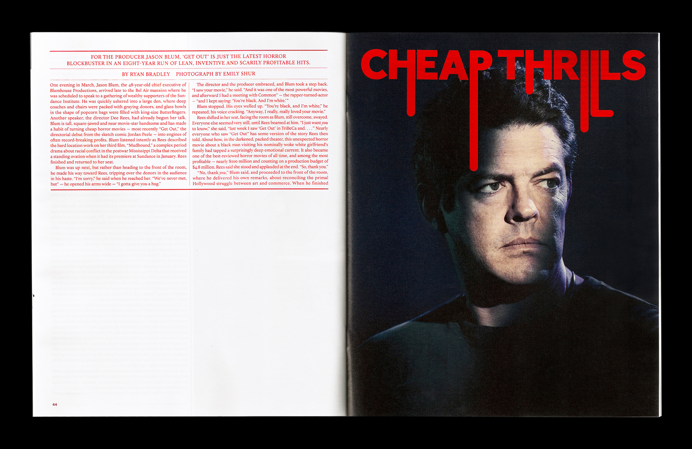

'The Other Side of Anne'. About the Netflix remake of 'Anne of Green Gables':
'The Pop Prodigy Returns'. On Lorde's sophomore album:
 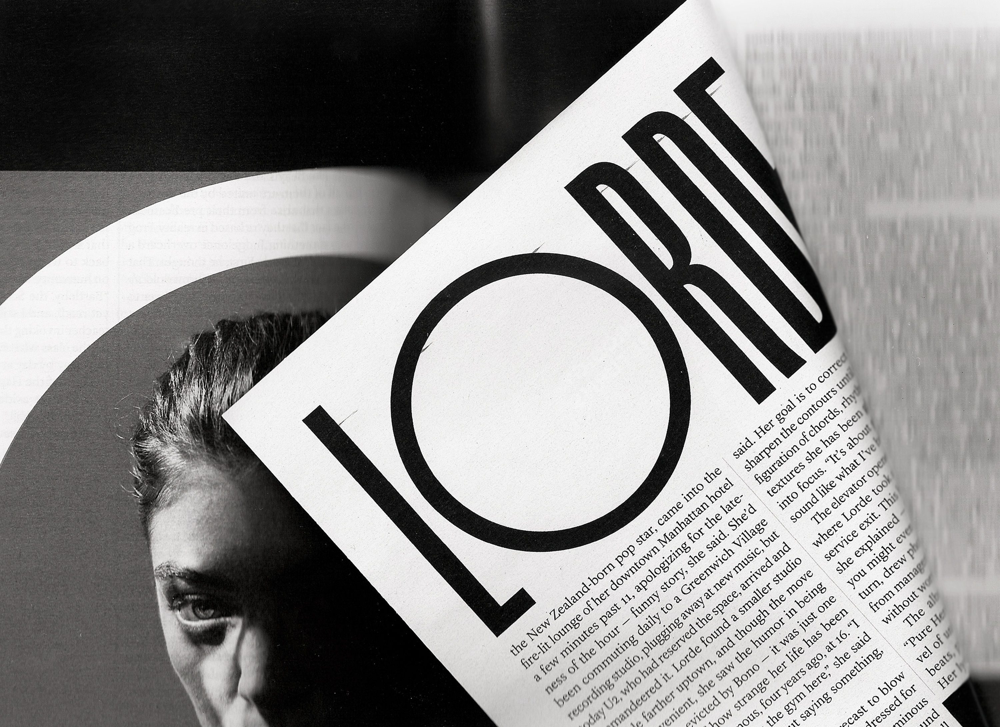
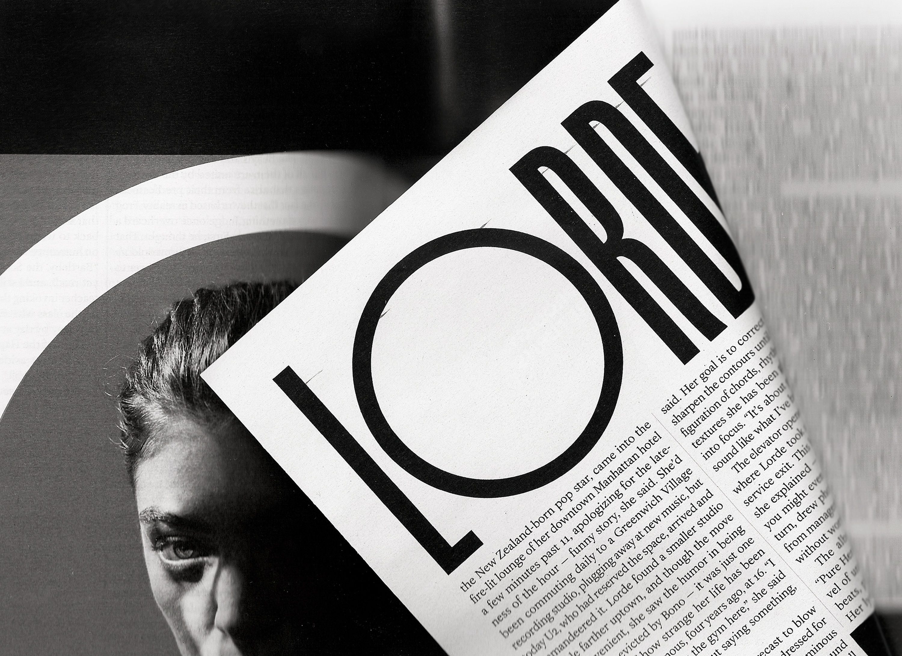
'In the Shadow of a Fairy Tale'. An essay on stepmotherhood:

'How to Steal a River'. About India's sand mining crisis: 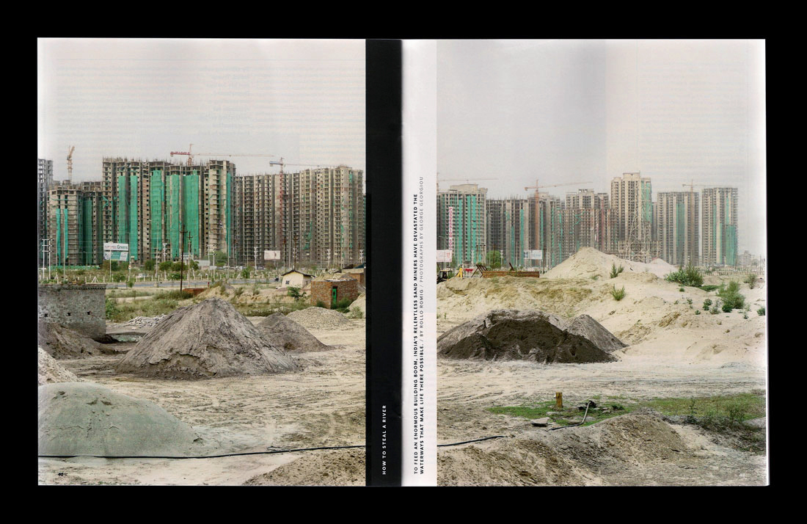
'The Mailroom'. About the Office of Presidential Correspondence: 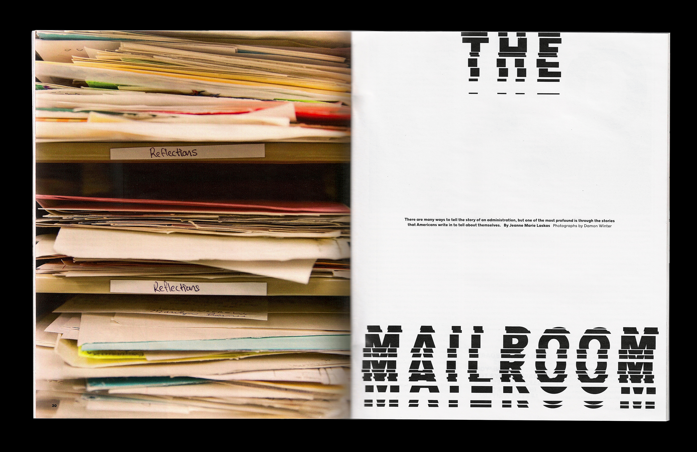
'The French Defection'. About the political leanings of France's working class:

'The House at the End of the World'. About a San Francisco-based doctor who is reforming hospice care:
'Redemption'. On Martin Scorsese's new film 'Silence', about Jesuit preachers in Japan: 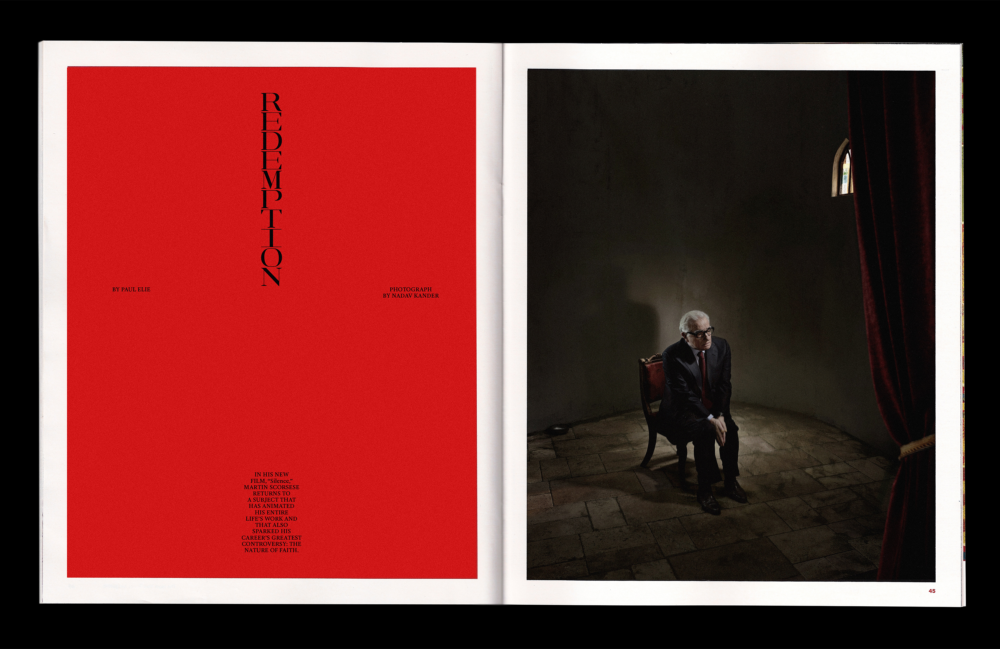
 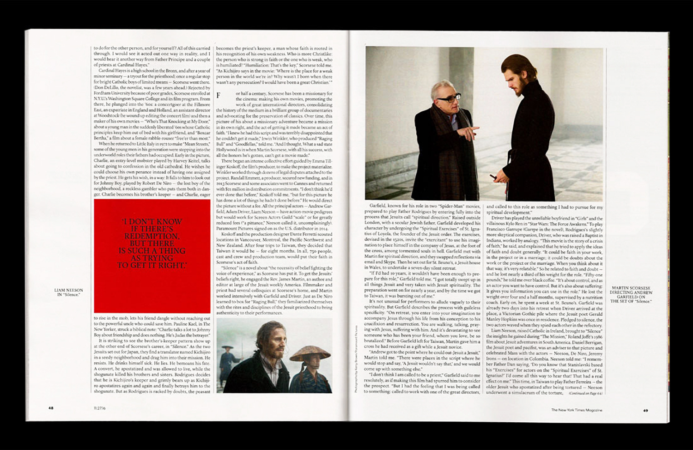
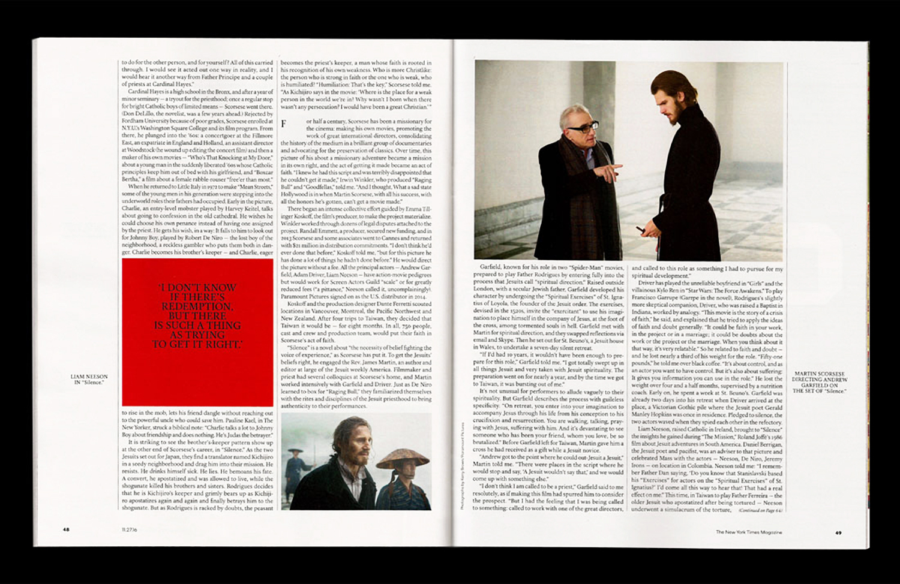
'Natural Magic'. About the history of optics, illusions, and virtual reality:
'The Precisionist'. A profile of the filmmaker Kelly Reichardt: 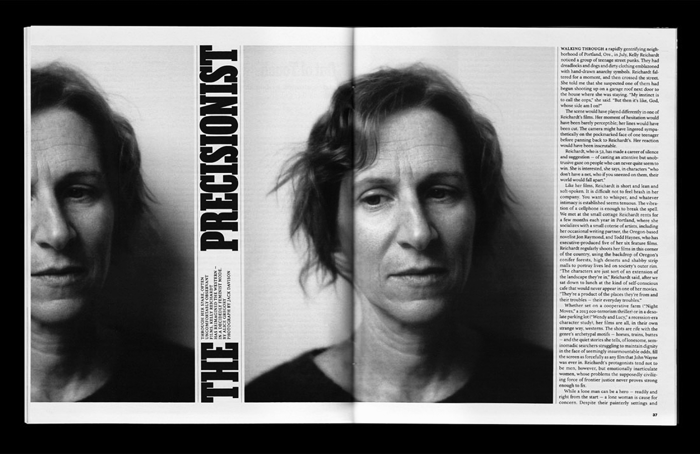
'Blow Up'. A profile of the painter Chuck Close: 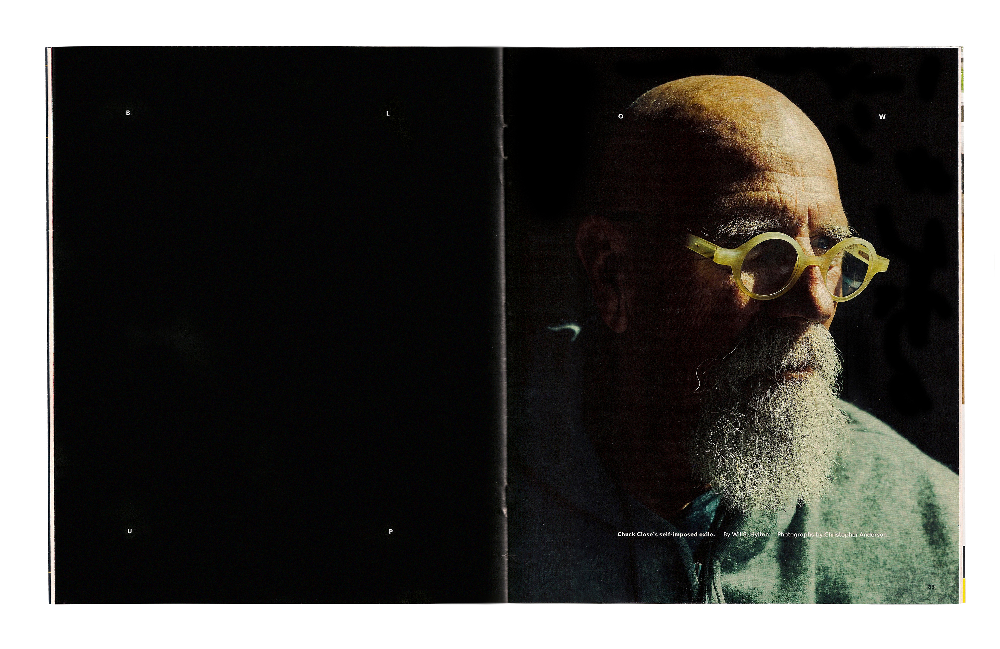

'The Lost Island'. About an island disappearing due to rising water levels: 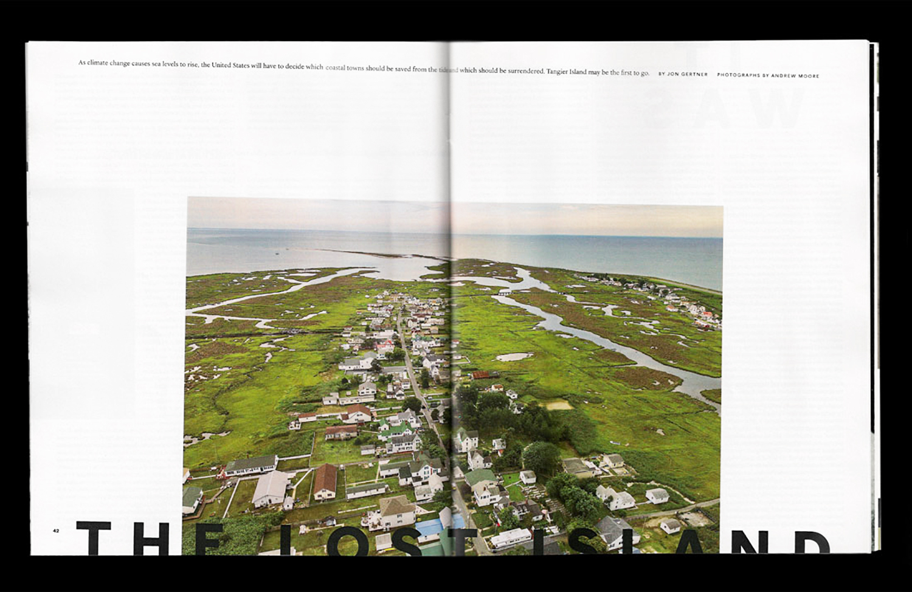
'Aftershock'. About the physical effects of tramatic brain injuries:

--> 'The Cloud'. About a methane leak in California:

'Double Deal'. About a documentary film that follows an F.B.I. informant:


'The Transmitter'. About Chris Jackson, radical editor:


'The Wreck of Amtrak 188'. About a crash in Philadelphia (a rock thrown at the windshield was an important factor):

'Unsettled'. About an immigrant family scattered across the globe, trying to reunite in the States:


'Fighting Words'. About secular bloggers attacked with machetes by Islamic extremists:

'North Star'. About Justin Trudeau, Canada's newly elected prime minister: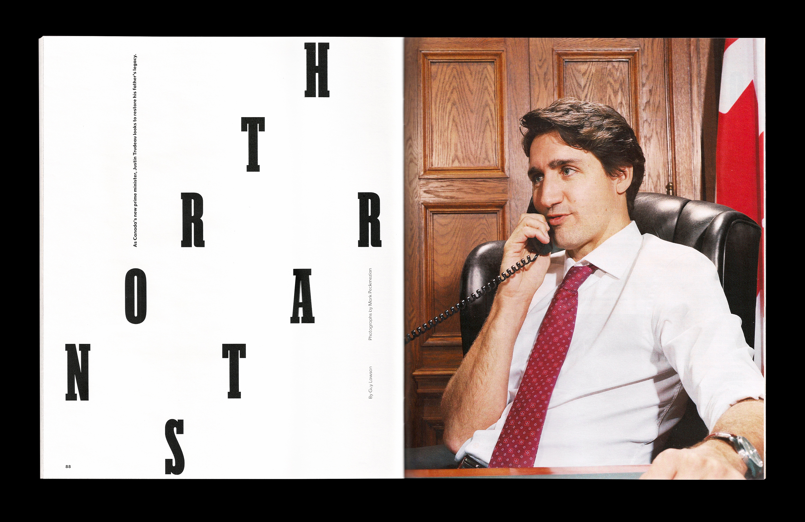